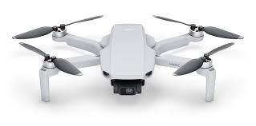
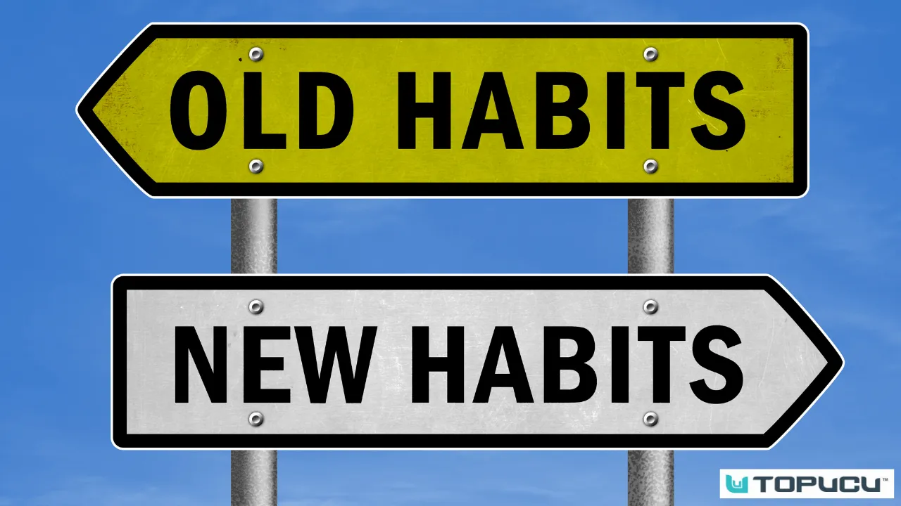

Projects
Rock Paper Scissors!

Created a Rock Paper Scissors game within the browser using Javascript. The player faces a computer using randomized moves for 10 rounds. Once 10 rounds has been reached, the game will display the winner.
3D Mapping Using Drones
Used Python to instruct a drone to fly over speficied areas to collect topographical data. Data collected was then used to create a 3D representation of the surfaces. Project has scope for military, firefighters, constructions, etc.
Tragectory Calculator

Used a network of sonar sensors to track an object in flight. Sonar sensors collected data of the object's flight path and calculate the trajectory of the object to point of impact.
Habits
Created an application to track a user's habits, with reminders for them to keep up with them. Allows the user to store the habits in the cloud and sync between any devices that have the same application.
Dice
Created a random number generator between the limits the user defines. Created to make sure no one forgets their dice for DnD.
Coding Portfolio
Created this website to connect front end and back end aspects of the bootcamp. HTML, CSS, and JS created the appearance of this webiste, while noSQL was used as a server to store contact forms from the contact page.